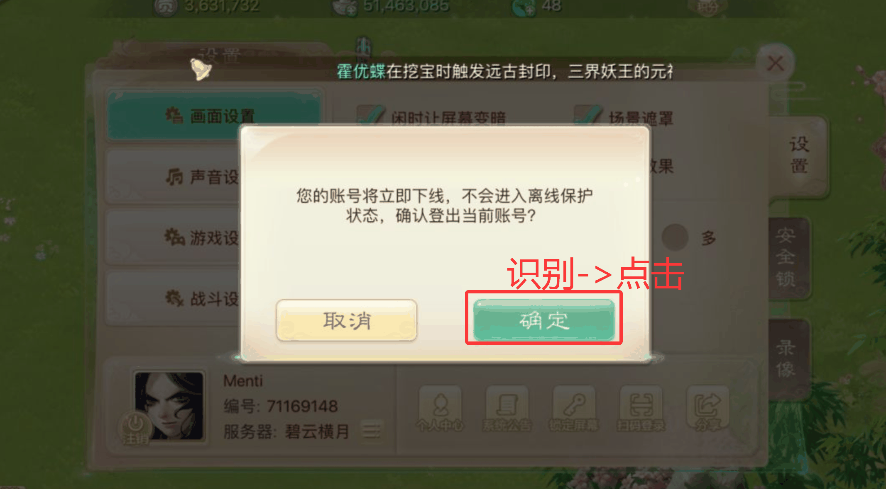
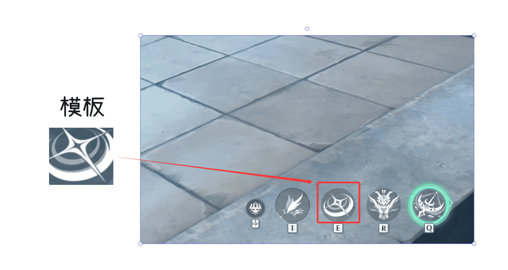
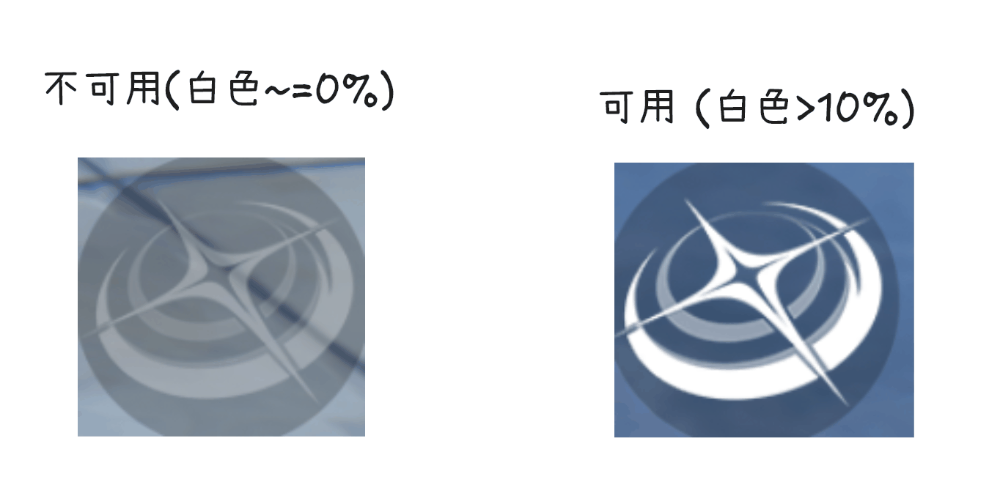
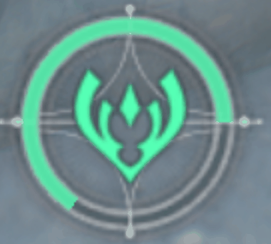
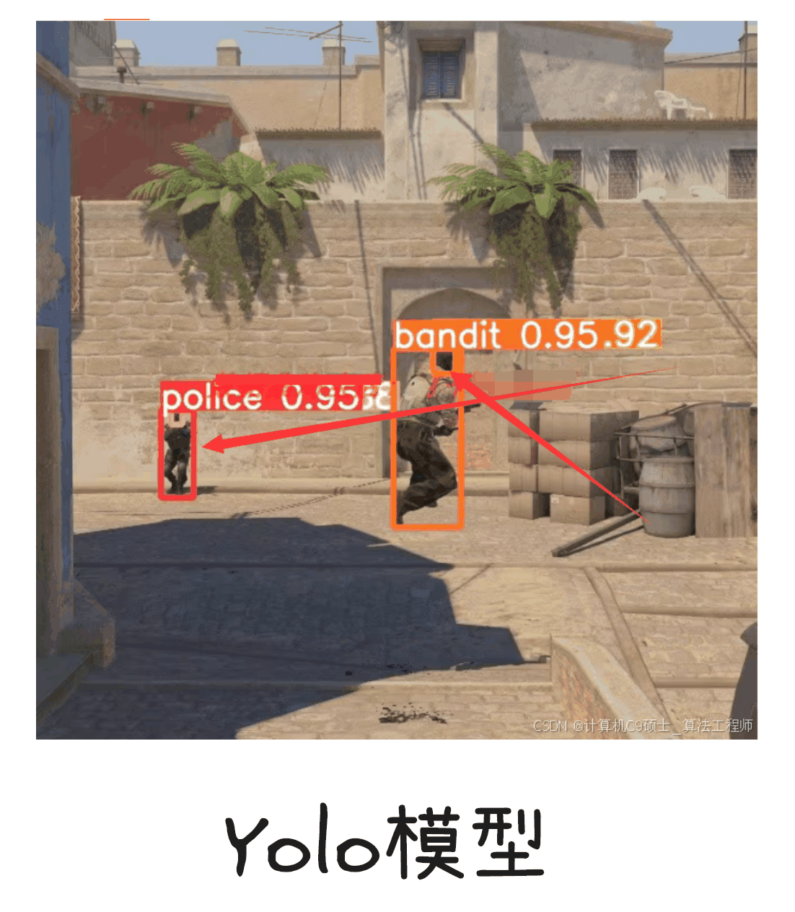
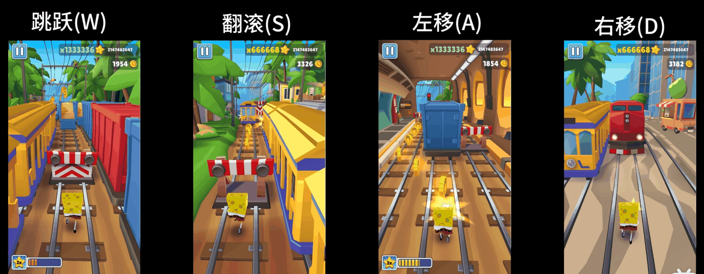

基於計算機視覺的遊戲自動化入門
English · 文件中心 · 快速開始 · API 參考
本文件旨在為初學者提供一個關於如何使用計算機視覺技術實現遊戲自動化的快速入門指南。我們將從基本原理講起，逐步介紹所需的程式語言和開發工具。
目錄
一、基本原理：計算機如何“玩”遊戲 { #一基本原理計算機如何玩遊戲 }
基於計算機視覺的遊戲自動化，本質上是模擬人類玩家通過“眼睛”觀察遊戲畫面，然後通過“大腦”分析決策，最後通過“手”執行操作的過程。這個過程可以被簡化為一個核心迴圈。
核心迴圈：三步走 { #核心迴圈三步走 }
遊戲截圖 → 影像分析 → 輸出操作

圖：識別確定按鈕, 並點選輸入 (Input) - 遊戲截圖：程式首先需要獲取遊戲的即時畫面。
- 資料量: 以一張
1920x1080解析度的螢幕為例，每個畫素包含藍(B)、綠(G)、紅(R)三個顏色通道，每個通道的值域為 0-255（即1個位元組）。 - 計算：
1920 * 1080 * 3 bytes ≈ 6.22 MB。這意味著每一幀影像都是一個相當大的資料塊，因此高效的分析演算法至關重要。
- 資料量: 以一張
處理 (Processing) - 影像分析：這是整個流程的核心和大腦。程式需要從充滿畫素點的截圖中提取出有意義的資訊，以做出決策。主要有兩種技術路徑。
輸出 (Output) - 模擬操作：根據影像分析的結果，程式會模擬人類玩家的鍵盤和滑鼠操作。這不僅包括立即執行的動作，還包括策略性的等待。
- 立即操作: 移動滑鼠、點選按鈕、按下鍵盤等，從而與遊戲進行互動。
- 等待操作: 持續監控遊戲畫面，直到滿足特定條件再執行下一步。例如，程式可以迴圈截圖分析，直到畫面中出現“戰鬥結束”的文字，才進行點選“確定”按鈕的操作。
影像分析：從畫素到決策 { #影像分析從畫素到決策 }
我們將影像分析的方法分為兩大類：傳統的圖色演算法和現代的神經網路推理。
| 方法 (Method) | 耗時 (Latency) | 易用性 (Ease of Use) | 主要計算單元 (CPU/GPU) |
|---|---|---|---|
| 找色/特徵分析 | 極低 (ms級) | 高(原理簡單) / 中(定製複雜演算法) | CPU |
| 找圖 (模板匹配) | 1-50ms | 中 (需要維護模板圖片庫) | CPU |
| OCR (文字識別) | 10-200ms | 易(有現成模型) / 難(支援多語言) | CPU / GPU |
| 目標檢測 (YOLO等) | 中~高 (20-500ms+) | 難 (需要自己訓練模型) | CPU / GPU |
| 多模態大模型 | 高 (500ms+) | 難 (付費, 接入遠端API) | GPU / (遠端API) |
1. 傳統圖色演算法 (OpenCV 庫) { #1-傳統圖色演算法-opencv-庫 }
這類演算法速度快、實現簡單，適用於處理介面固定、特徵明顯的場景。最常用的庫是 OpenCV。
找圖 (Template Matching)
- 原理: 在整個遊戲截圖中，尋找一個預先準備好的小圖片（模板），比如一個按鈕、一個圖示。
- 應用: 點選確定的UI按鈕、識別特定怪物或道具圖示。

圖：在螢幕截圖中尋找“設定”按鈕的模板
找色 (Color Finding)
- 原理: 在指定區域內尋找特定顏色或顏色範圍的畫素點。
- 應用: 判斷角色的血條/藍條狀態、識別高亮的按鈕或文字、尋找特定顏色的目標。

圖：通過識別紅色來定位敵人的血條
特徵分析 (Feature Analysis)
- 原理: 通過輪廓檢測、邊緣檢測等演算法，分析影像中特定物件的幾何特徵。
- 應用: 計算讀條或技能的進度、判斷某個區域是否出現特定形狀的物體。

圖：通過計算畫素比例來判斷進度條的完成度
2. 神經網路推理 (Inference) { #2-神經網路推理-inference }
當遊戲介面複雜、元素多變或需要識別更抽象的概念時，神經網路模型就派上了用場。這通常需要使用預先訓練好的模型進行“推理”。
OCR (光學字元識別)
- 原理: 從影像中識別並提取文字資訊。
- 應用: 讀取角色的血量數值、識別NPC對話內容、獲取任務目標文本。
 圖：識別遊戲中的傷害數字或角色名稱
圖：識別遊戲中的傷害數字或角色名稱
目標檢測 (Object Detection)
- 原理: 在影像中找出所有感興趣的物件，並用方框標記出它們的位置。相比模板匹配，它對物體的縮放、旋轉和部分遮擋有更好的魯棒性。
- 應用: 即時定位螢幕上所有的敵人、隊友或可拾取的物品。

圖：使用YOLO等模型框選出遊戲中的所有角色
更多深度學習應用
- 影像分割: 比目標檢測更精確，可以識別出物體不規則的輪廓。適用於判斷精確的可通行區域或攻擊範圍。
- 影像分類: 判斷當前遊戲處於何種“狀態”，例如是在主選單、在戰鬥中還是在地圖介面。

圖：使用影像分割精確識別可攻擊的敵人輪廓
前沿：多模態大模型
- 原理: 這是目前最前沿的方向，結合了視覺和語言理解能力。模型可以直接“看懂”螢幕，並根據自然語言指令（例如“去找到那個紅色的寶箱”）來執行復雜任務。
- 應用: 實現更具通用性和智慧化的遊戲自動化代理（Agent）。
二、程式語言選擇 { #二程式語言選擇 }
對於初學者，我們強烈推薦使用 Python (官網下載)。
- 為什麼是Python？
- 生態系統強大: 擁有海量的第三方庫，幾乎所有你需要的功能都有現成的工具。
- 語法簡潔，上手快: Python的語法接近自然語言，讓你可以更專注於實現邏輯，而不是糾結於複雜的語法細節。非常適合快速原型開發和驗證想法。
- 社群活躍: 遇到任何問題，你都可以輕鬆地在網上找到大量的教程、文件和解決方案。
常用庫概覽 { #常用庫概覽 }
- OpenCV: 計算機視覺的基礎庫，用於影像處理、模板匹配、特徵分析等所有視覺相關的底層操作。
- pywin32: Windows平臺專用庫，提供底層的API呼叫能力，常用於更穩定、更高效的視窗截圖和模擬鍵鼠操作。
- PaddleOCR: 百度開源的OCR工具庫，提供多語言、高精度的文字識別能力，開箱即用。
- Onnxruntime: 微軟開源的推理引擎，用於高效執行深度學習模型（如YOLO），可以充分利用CPU或GPU進行加速。
- YOLO (Ultralytics): 目前最流行的目標檢測模型實現，提供了易於使用的Python介面，可以快速實現遊戲內目標的檢測。
- PyTorch & TensorFlow: 兩大主流的深度學習框架。主要用於訓練自定義的神經網路模型，適用於有更高定製化需求的進階使用者。
三、開發工具 { #三開發工具 }
好的工具能讓開發事半功倍。
程式碼編輯器 (IDE)
-
- 程式碼託管與學習: 使用 GitHub 來託管你的程式碼。這不僅是程式碼的備份，更是專案管理和與他人協作的基礎。同時，GitHub 上有各種遊戲自動化專案可以參考，是學習和尋找靈感的絕佳平臺。
- GitHub Desktop: 對於不熟悉命令列的初學者，強烈推薦使用官方的 GitHub Desktop 客戶端。它將複雜的 Git 操作（如提交、推送、拉取、建立分支等）簡化為直觀的點選操作，極大地降低了版本控制的上手門檻。
- 自動化流程 (GitHub Actions): GitHub Actions 提供了強大的自動化能力，可以免費用於專案的自動化測試、打包和釋出，是現代開發流程中不可或缺的一環。
AI 程式設計助手
- 作用: 在你遇到困難時，AI可以幫你解釋概念、除錯程式碼、生成程式碼片段，極大提高開發效率。
- 推薦:
- Gemini Pro 2.5或以上：Google的強大模型。可以通過免費的開發者API Key在你的IDE中整合, 如Cherry Studio。
- 免費使用渠道: Google AI Studio
 在 GitHub 查看來源 ↗
在 GitHub 查看來源 ↗